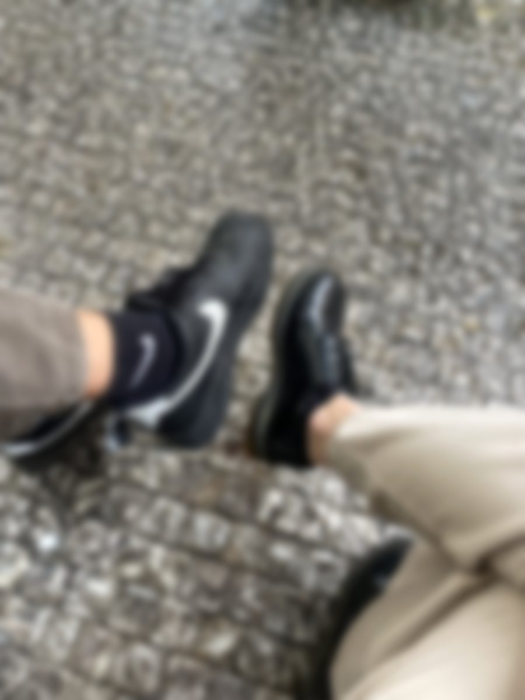

23:23
La nostra prima uscita. Per dire così, per dire così. Non so nemmeno se tu la chiameresti così.
Ma per me lì è iniziato tutto. È iniziato il tutto. Anche se tu, in realtà, c'eri già da prima: c'eri da quel ciao alle biciclette.

Mi ricordo che ogni tuo messaggio, già da lì, ha avuto un po' la sua storia. Ogni tuo messaggio aveva una sua regola di vita. Li leggevo, e li rileggevo. Cercavo di capire cosa volevi dirmi, anche quando forse non volevi dirmi niente.
i tuoi messaggi · scorri →
sempre te.
Ti scrivevo ogni giorno. Ogni giorno. E a un certo punto ti avevo raccontato questa cosa delle 23:23. Una cosa piccola, mia.
Poi una sera, la notte prima degli esami, me l'hai scritta tu. Per la prima volta. Proprio quella sera, quando avresti dovuto pensare a tutto tranne che a me.
Felicissimo. Ho detto: ok, forse c'è una speranza. Forse non è tutto nella mia testa.
perso.
Però da lì è iniziata anche un po' la ricaduta. Nessuna uscita è più stata così. Nessuna come quella prima.
L'uscita a Monte Berico. Quella non me la scorderò mai.
Le scalette. Il video. Tutto. Me la ricordo passo per passo, scalino per scalino.
Anche se, praticamente, è stata l'ultima uscita. Ma bella. Bellissima.
Per il resto, ci vedevamo, ci scrivevamo, ma qualcosa non tornava più uguale.
Io ero molto preso. Tu, magari, in realtà non volevi niente di più. E forse, in fondo, lo sapevo anche. Ma io continuavo a sperarci. A sperarci, e a sperarci ancora.
Arrivati a settembre, mi ricordo, ero gelosissimo. Geloso di questo Francesco…
Finché non è arrivato quel fatidico settembre, poco prima del mio compleanno.
Quella sera ho provato a dirti che mi piacevi. Ci ho provato davvero, avevo le parole lì, pronte. Ma non ce l'ho fatta. Non mi sono uscite.
Però forse avevi capito.
o almeno, così pensavo